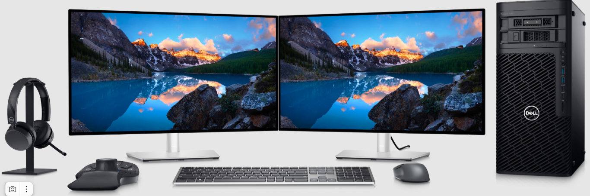

Projeto: Operação de LLMs Locais Offline com Antigravity
Este relatório apresenta o investimento necessário para a compra de um Desktop de alto desempenho capaz de rodar, de forma 100% local e offline, modelos de linguagem como:
O sistema será a base de toda a stack de IA do projeto, servindo ao Antigravity e aos scripts de automação (Python, n8n, etc.), rodando sob Windows 11 Pro com licença.
Configuração pensada para rodar LLMs pesados localmente com 32 GB de VRAM GPU + 128 GB de RAM, otimizada para Windows 11 Pro licenciado.
| Item | Especificação | Preço médio (R$) |
|---|---|---|
| 🖥️ Processador (CPU) | AMD Ryzen 9 7950X ou Intel Core i9‑13900K / 14900K | 3.000 – 4.000 |
| 🔌 Placa‑mãe | B650‑E / X670 ou Z790 com 4 slots DDR5, PCIe 4.0/5.0 | 1.500 – 2.500 |
| 🧠 GPU (32 GB VRAM) | RTX 6000 Ada 32 GB ou configuração equivalente | 10.000 – 15.000 |
| 🧠 RAM | 128 GB DDR5 (4×32 GB, 5200–5600 MHz) | 1.800 – 2.500 |
| 💾 SSD (sistema e programas) | 1×500 GB NVMe PCIe 4.0 | 350 – 600 |
| 💾 SSD (armazenamento extra) | 1×1 TB NVMe ou SATA | 400 – 700 |
| ⚡ Fonte (PSU) | 1000 W, 80+ Gold, de boa marca | 1.200 – 1.800 |
| 📦 Gabinete | Mid‑tower com bom airflow | 500 – 800 |
| 💻 Sistema Operacional | Windows 11 Pro (com licença) | 1.000 – 1.200 |
| 📦 HDs externos (2 TB) | 2×2 TB HDD USB 3.0 (hot backup) | 600 – 900 |
| 📺 Monitores (2× | 2×27" / 2×32" IPS 16:9 | 2.000 – 4.000 |
| ⌨️ Teclado | Full‑size mecânico / clicky | 300 – 600 |
| 🖱️ Mouse | Ergonômico com boa DPI | 200 – 400 |
Orçamento recomendado para o projeto: ⚠️ R$ 25.000,00
Esse valor cobre todo o desktop, GPU profissional, 128 GB de RAM, SSDs, dual‑monitor e acessórios. O sistema operacional é Windows 11 Pro licenciado, e a base já está preparada para possíveis futuras expansões.
Observação: O montante de R$ 25.000,00 posiciona o investimento no segmento de baixo/médio risco, com alta probabilidade de geração de valor contínuo ao longo do tempo.